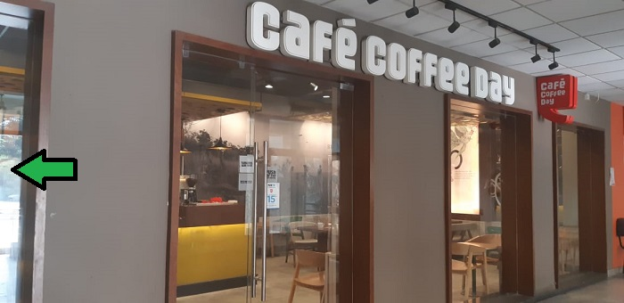

|  |
AboutCafe Coffee Day Global limited Company is a Chikkamagaluru based business which grows coffee in its own estates of 12, 000 acres. It is the largest producer of arabica beans in Asia exporting to various countries including USA, Europe and Japan.Café Coffee Day was started as a retail restaurant in 1996.[6] The first CCD outlet was set up on July 11, 1996, at Brigade Road, Bengaluru, Karnataka. It rapidly expanded across various cities in India adding more stores with more than 1000 cafés open across the nation by 2011. |